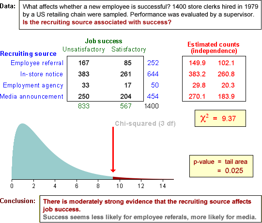

Contingency tables and groups
Contingency tables can either arise from bivariate categorical data or from univariate categorical data that is recorded separately from several groups.
The chi-squared test assesses independence in bivariate data. The same test can also be used to compare the different groups if there is grouped data.
Example
